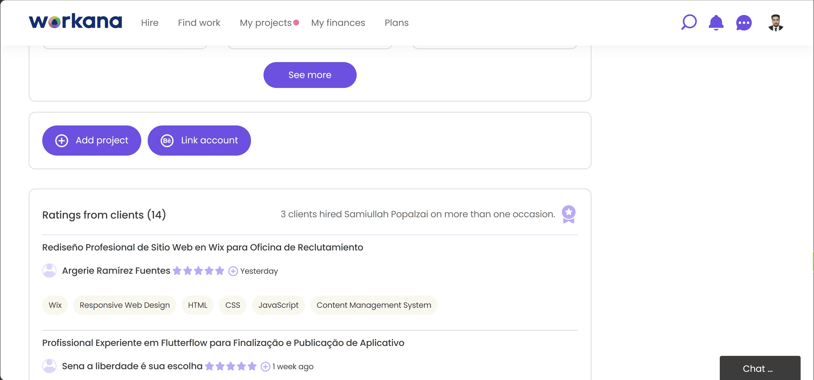
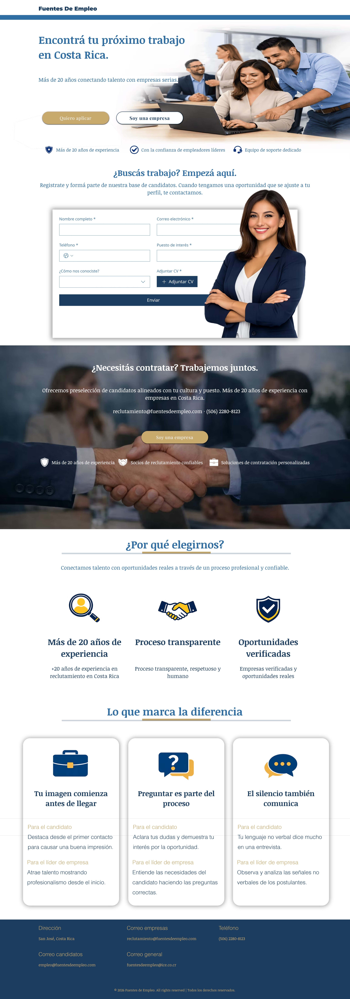

Tech Stack & Tools
Wix
Wix Forms
Email Automation
Responsive Web Design
The platform was built using Wix, leveraging its integrated form system and automation tools. Job seekers can submit applications through structured forms, which automatically deliver submissions both to the platform owner's inbox and directly to the employer's email. The system ensures seamless communication between candidates and recruiters without requiring manual intervention. The responsive design guarantees usability across mobile and desktop devices.
My Role
I handled the complete development of the Fuentes De Empleo landing page on Wix. My responsibilities included designing the layout, structuring job listings, configuring form submissions, and setting up automated email routing. I ensured that job applications are instantly forwarded to both the platform owner and respective employers.
Additionally, I optimized the user experience for both job seekers and companies. Candidates can quickly apply through simple forms, while companies can directly contact the client via email for recruitment purposes. My work focused on creating a fast, reliable, and easy-to-manage recruitment platform.

Client Review

Complete Case Study
Instant
Form submissions delivered in real-time to all relevant emails
2x Reach
Applications sent to both client and employer simultaneously
$0
No backend infrastructure or server costs required
Simple
Easy workflow for both job seekers and recruiters
Fuentes De Empleo is a recruitment-focused landing page designed to connect job seekers with employers efficiently. The client needed a simple yet effective system where candidates could apply to job postings without friction, while companies could directly reach out for hiring.
I implemented a solution where job seekers submit their information through structured forms. Once submitted, the data is automatically sent to the platform owner's inbox and simultaneously forwarded to the employer associated with that job listing. This eliminates delays and ensures immediate visibility of candidates.
In addition, companies can directly contact the client via email to initiate recruitment processes. This dual-flow system supports both inbound applications and outbound recruitment communication.
The result is a streamlined hiring process with minimal manual work. The client now manages all communications digitally, reducing complexity and improving response time. The platform serves as a lightweight yet powerful recruitment hub built entirely on Wix.

Walkthrough
How I Built it?
I started by designing the structure of the landing page inside Wix, focusing on clarity and ease of navigation. I organized job listings and created dedicated sections for applicants and companies.
Then, I configured Wix Forms to capture applicant data and set up automation rules to send submissions to multiple email recipients simultaneously. This ensured that both the client and employers receive applications instantly.
Finally, I optimized responsiveness and tested the workflow across devices to ensure reliability. The entire project was completed efficiently, delivering a ready-to-use recruitment platform without requiring custom backend development.